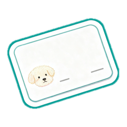
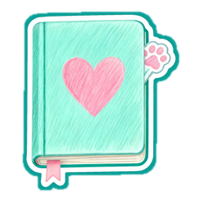
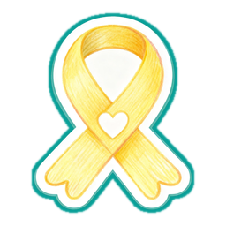
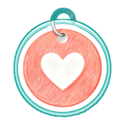

結果画面の「カードや、おでかけに使える機能」の4つを、もっと目立たせる形です。機能の中身は変えません。
カードや、おでかけに使える機能

名刺カードを作る＋
ワン友交換用QRを出す＋
おねがい（黄色いリボン）＋
もしものときカードを作る＋同じ形の白い一覧なので、読み物のおまけに見えます。何ができるかも、開くまでわかりません。
うちの子のカードを作ろう
押すと、その場で作れます
大きな絵と色で、「作れるもの」がひと目でわかる形。押すと今と同じように開きます。
うちの子のカードを作ろう
1つずつ何に使えるかを書いて、ボタンもつける形。いちばんわかりやすいですが、縦に長くなります。
案Aと案Cは、組み合わせることもできます（上で予告して、下は色つきのタイル）。